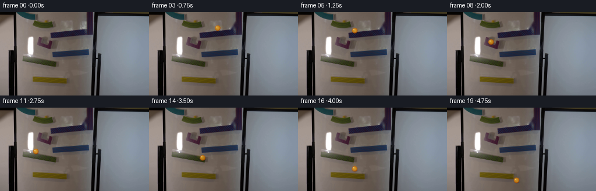
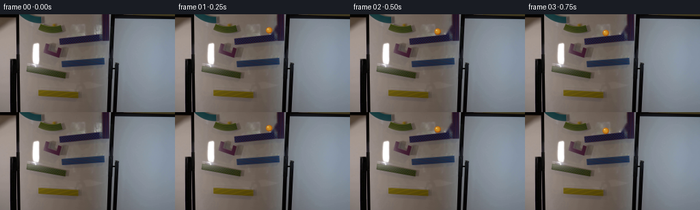
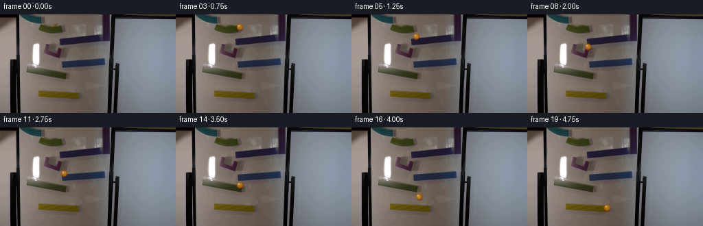
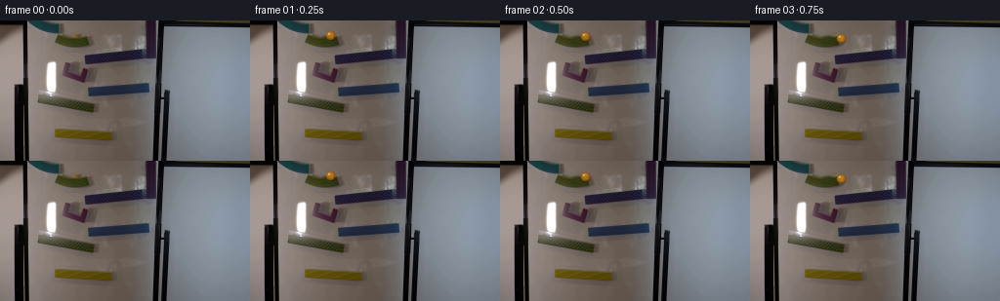

CODING AGENTS AS PIXEL WORLD MODELS
traex/GPT-5.6-Sol · 0105
点击播放 · 原生 RGB 像素
逐轮保存的候选
回放视频、检查图与代码变化。
每份候选均可单独播放。实际图片检查记录在下方工具轨迹中。
候选 01播放与检查图
点击播放 · 原生 RGB 像素


展开代码变化
--- 上一保存版本
+++ 本次保存版本
@@ -0,0 +1,139 @@
+"""Generate a locked-camera marble-run sequence from the supplied first frame."""
+from pathlib import Path
+import math
+import cv2
+import numpy as np
+from PIL import Image
+import artifact_io
+
+ROOT = Path(__file__).resolve().parent
+
+
+def remove_starting_marble(rgb):
+ """Make a clean plate under the marble visible at the upper-right ramp."""
+ # The starting glass ball is the small round object centred at (144, 22).
+ # Telea interpolation is confined to it; all of the photographed texture
+ # outside the seven-pixel disc remains exactly as supplied.
+ mask = np.zeros(rgb.shape[:2], np.uint8)
+ cv2.circle(mask, (144, 22), 7, 255, -1, lineType=cv2.LINE_AA)
+ # inpaint takes BGR, though the operation itself is colour agnostic.
+ bgr = cv2.cvtColor(rgb, cv2.COLOR_RGB2BGR)
+ clean = cv2.inpaint(bgr, mask, 3, cv2.INPAINT_TELEA)
+ return cv2.cvtColor(clean, cv2.COLOR_BGR2RGB)
+
+
+def composite_rgba(base, layer):
+ a = layer[..., 3:4].astype(np.float32) / 255.0
+ return np.clip(base.astype(np.float32) * (1.0 - a) +
+ layer[..., :3].astype(np.float32) * a, 0, 255).astype(np.uint8)
+
+
+def add_marble(frame, x, y, previous=None):
+ """Render a tiny translucent yellow glass marble and its contact shadow."""
+ h, w = frame.shape[:2]
+ yy, xx = np.mgrid[0:h, 0:w].astype(np.float32)
+
+ # A soft motion smear is short enough to retain the scientific-demo look
+ # at the requested 1/4-second shutter cadence.
+ out = frame.copy()
+ if previous is not None:
+ px, py = previous
+ speed = math.hypot(x - px, y - py)
+ if speed > 6:
+ blur_layer = np.zeros((h, w, 4), np.uint8)
+ for u, alpha in ((0.34, 18), (0.58, 28), (0.78, 34)):
+ bx, by = px + (x-px)*u, py + (y-py)*u
+ d = np.hypot(xx-bx, yy-by)
+ cov = np.clip(3.6-d, 0, 1)
+ a = (cov * alpha).astype(np.uint8)
+ take = a > blur_layer[..., 3]
+ blur_layer[take, :3] = (222, 156, 18)
+ blur_layer[take, 3] = a[take]
+ out = composite_rgba(out, blur_layer)
+
+ # Shadow follows the board plane, displaced down and right from the ball.
+ shadow = np.exp(-(((xx-(x+1.4))/4.6)**2 + ((yy-(y+3.3))/2.25)**2) * 1.7)
+ shadow *= 0.25
+ out = np.clip(out.astype(np.float32) * (1.0-shadow[..., None]), 0, 255).astype(np.uint8)
+
+ # Five-pixel ball: dark amber rim, luminous transparent golden centre.
+ dx, dy = xx-x, yy-y
+ r = np.sqrt(dx*dx + dy*dy)
+ coverage = np.clip(5.25-r, 0.0, 1.0)
+ inside = r <= 5.25
+ radial = np.clip(r/5.25, 0, 1)
+ # Lighting from upper left and warmer/darker lower rim.
+ light = np.clip((-0.45*dx - 0.58*dy)/5.25, -1, 1)
+ center_col = np.zeros((h, w, 3), np.float32)
+ center_col[..., 0] = 238 + 22*light - 83*radial**2
+ center_col[..., 1] = 165 + 30*light - 105*radial**2
+ center_col[..., 2] = 25 + 16*light - 18*radial
+ # A slight transparent core lets the underlying ramp read through.
+ alpha = coverage * (0.67 + 0.24*radial)
+ alpha *= inside
+ out_f = out.astype(np.float32)
+ out_f = out_f*(1-alpha[...,None]) + center_col*alpha[...,None]
+
+ # Bright curved glass highlight and a tiny lower internal reflection.
+ spec = np.exp(-(((dx+1.65)/1.18)**2 + ((dy+1.75)/1.0)**2)*1.55)
+ spec *= inside
+ out_f = out_f*(1-(0.78*spec)[...,None]) + np.array([255,247,183],np.float32)*(0.78*spec)[...,None]
+ glint = np.exp(-(((dx-1.45)/1.65)**2 + ((dy-1.9)/0.75)**2)*1.9) * inside
+ out_f = out_f*(1-(0.18*glint)[...,None]) + np.array([255,205,60],np.float32)*(0.18*glint)[...,None]
+ return np.clip(out_f, 0, 255).astype(np.uint8)
+
+
+def catmull_rom(points, samples_per_span=24):
+ """Dense Catmull-Rom curve through points, parameterized by arc length."""
+ p = np.asarray(points, np.float64)
+ ext = np.vstack([p[0], p, p[-1]])
+ dense = []
+ for i in range(1, len(ext)-2):
+ p0,p1,p2,p3 = ext[i-1:i+3]
+ for j in range(samples_per_span):
+ t=j/samples_per_span; t2=t*t; t3=t2*t
+ q=.5*((2*p1)+(-p0+p2)*t+(2*p0-5*p1+4*p2-p3)*t2+(-p0+3*p1-3*p2+p3)*t3)
+ dense.append(q)
+ dense.append(p[-1])
+ return np.asarray(dense)
+
+
+def sample_curve(curve, fractions):
+ steps=np.linalg.norm(np.diff(curve,axis=0),axis=1)
+ distance=np.r_[0,np.cumsum(steps)]
+ return np.column_stack([np.interp(fractions,distance/distance[-1],curve[:,k]) for k in (0,1)])
+
+
+def main():
+ first = np.asarray(Image.open(ROOT/'first_frame.png').convert('RGB'), dtype=np.uint8)
+ assert first.shape == (144,256,3)
+ clean = remove_starting_marble(first)
+
+ # Waypoints trace the visible descending magnetic pieces. The changes in
+ # spacing mimic acceleration on a ramp, a brief free fall, and impact.
+ waypoints = [
+ (144,22), (132,24), (113,28), (95,32), (89,35),
+ (87,43), (80,49), (68,54), (62,58),
+ (60,69), (61,75), (68,79), (80,82), (93,87),
+ (97,94), (97,104), (97,109), (105,112), (114,116), (119,125)
+ ]
+ curve=catmull_rom(waypoints)
+ # Sample non-uniformly: small initial motion, faster across each ramp.
+ # Arc-length sampling already makes it physically smooth; these fractions
+ # leave the ball visible in every requested frame.
+ fractions=np.array([0.00, .035, .083, .135, .190, .240, .290, .345, .400,
+ .455, .510, .565, .620, .675, .730, .785, .835, .885, .940, 1.0])
+ positions=sample_curve(curve,fractions)
+
+ frames=[first.copy()]
+ # Frame 0 must retain the exact original photograph, including its ball.
+ for i in range(1,20):
+ x,y=positions[i]
+ prev=positions[i-1]
+ frames.append(add_marble(clean,x,y,prev))
+ arr=np.stack(frames).astype(np.uint8)
+ assert np.array_equal(arr[0],first)
+ artifact_io.save(arr,ROOT)
+
+if __name__ == '__main__':
+ main()
候选 02播放与检查图
点击播放 · 原生 RGB 像素


展开代码变化
--- 上一保存版本
+++ 本次保存版本
@@ -11,11 +11,12 @@
def remove_starting_marble(rgb):
"""Make a clean plate under the marble visible at the upper-right ramp."""
- # The starting glass ball is the small round object centred at (144, 22).
+ # The starting glass ball is the small golden object resting on the first
+ # (uppermost) ramp. Its muted colour is caused by the warm, dim room light.
# Telea interpolation is confined to it; all of the photographed texture
# outside the seven-pixel disc remains exactly as supplied.
mask = np.zeros(rgb.shape[:2], np.uint8)
- cv2.circle(mask, (144, 22), 7, 255, -1, lineType=cv2.LINE_AA)
+ cv2.circle(mask, (79, 15), 5, 255, -1, lineType=cv2.LINE_AA)
# inpaint takes BGR, though the operation itself is colour agnostic.
bgr = cv2.cvtColor(rgb, cv2.COLOR_RGB2BGR)
clean = cv2.inpaint(bgr, mask, 3, cv2.INPAINT_TELEA)
@@ -65,9 +66,9 @@
# Lighting from upper left and warmer/darker lower rim.
light = np.clip((-0.45*dx - 0.58*dy)/5.25, -1, 1)
center_col = np.zeros((h, w, 3), np.float32)
- center_col[..., 0] = 238 + 22*light - 83*radial**2
- center_col[..., 1] = 165 + 30*light - 105*radial**2
- center_col[..., 2] = 25 + 16*light - 18*radial
+ center_col[..., 0] = 205 + 21*light - 75*radial**2
+ center_col[..., 1] = 143 + 27*light - 92*radial**2
+ center_col[..., 2] = 24 + 15*light - 17*radial
# A slight transparent core lets the underlying ramp read through.
alpha = coverage * (0.67 + 0.24*radial)
alpha *= inside
@@ -109,21 +110,17 @@
assert first.shape == (144,256,3)
clean = remove_starting_marble(first)
- # Waypoints trace the visible descending magnetic pieces. The changes in
- # spacing mimic acceleration on a ramp, a brief free fall, and impact.
+ # Waypoints trace the visible descending magnetic pieces. The marble
+ # traverses the low end of one ramp, drops, then reverses direction on the
+ # next. Larger vertical increments are the short free-fall intervals.
waypoints = [
- (144,22), (132,24), (113,28), (95,32), (89,35),
- (87,43), (80,49), (68,54), (62,58),
- (60,69), (61,75), (68,79), (80,82), (93,87),
- (97,94), (97,104), (97,109), (105,112), (114,116), (119,125)
+ (79,14), (82,15), (87,16), (93,18), # upper ramp
+ (95,26), (94,32), (90,35), (87,38), # fall, then back left
+ (88,47), (90,56), (93,62), # diagonal chute
+ (93,67), (91,71), (91,79), (93,84), (97,87),
+ (98,101), (99,112), (108,114), (116,117) # bottom ramp
]
- curve=catmull_rom(waypoints)
- # Sample non-uniformly: small initial motion, faster across each ramp.
- # Arc-length sampling already makes it physically smooth; these fractions
- # leave the ball visible in every requested frame.
- fractions=np.array([0.00, .035, .083, .135, .190, .240, .290, .345, .400,
- .455, .510, .565, .620, .675, .730, .785, .835, .885, .940, 1.0])
- positions=sample_curve(curve,fractions)
+ positions=np.asarray(waypoints, np.float64)
frames=[first.copy()]
# Frame 0 must retain the exact original photograph, including its ball.
可观测工具轨迹
实际执行的命令与返回图片。
命令 1exit 0
/bin/bash -lc "cat GENERATION_RULES.md && printf '\\n---PROMPT---\\n' && cat prompt.txt"
命令 2exit 0
/bin/bash -lc "find . -maxdepth 2 -type f -printf '%p\\n' | sort && printf '\\nTOOLS\\n' && command -v ffmpeg || true && command -v python3 || true"
命令 3exit 0
/bin/bash -lc "python3 - <<'PY'
from PIL import Image
import numpy as np
im=np.array(Image.open('first_frame.png').convert('RGB'))
print(im.shape, im.min(), im.max(), im.mean((0,1)), im.std((0,1)))
# dominant quantized colors
q=(im//16)*16
u,c=np.unique(q.reshape(-1,3),axis=0,return_counts=True)
for i in np.argsort(c)[-25:][::-1]: print(u[i],c[i])
PY"命令 4exit 0
/bin/bash -lc "python3 - <<'PY'
try: import cv2; print('cv2',cv2.__version__)
except Exception as e: print(e)
from PIL import Image
import numpy as np, colorsys
im=np.array(Image.open('first_frame.png').convert('RGB'))
# yellow candidates conditions
for condname,m in [
('yellow', (im[:,:,0]>120)&(im[:,:,0]>im[:,:,1]*1.15)&(im[:,:,1]>im[:,:,2]*1.15)),
('sat warm',(im.max(2)-im.min(2)>50)&(im[:,:,0]>im[:,:,2]+35)&(im[:,:,1]>im[:,:,2]+15)),
('bright yellow',(im[:,:,0]>150)&(im[:,:,1]>110)&(im[:,:,2]<100))]:
ys,xs=np.where(m); print(condname,len(xs), (xs.min(),ys.min(),xs.max(),ys.max()) if len(xs) else None)
# bins
H=np.zeros((18,32),int)
for y,x in zip(ys,xs): H[y//8,x//8]+=1
print('\\n'.join(''.join(' .:+*#'[min(5,v//2)] for v in row) for row in H))
PY"命令 5exit 0
/bin/bash -lc "python3 - <<'PY'
import cv2,numpy as np
im=cv2.imread('first_frame.png'); g=cv2.cvtColor(im,cv2.COLOR_BGR2GRAY)
# print downsample luminance ASCII
chars=' .:-=+*#%@'
a=cv2.resize(g,(64,36),interpolation=cv2.INTER_AREA)
for row in a: print(''.join(chars[min(9,int(v)//26)] for v in row))
print('lines:')
e=cv2.Canny(g,60,140)
ls=cv2.HoughLinesP(e,1,np.pi/180,threshold=18,minLineLength=12,maxLineGap=5)
L=[]
for x1,y1,x2,y2 in ls[:,0]:
le=np.hypot(x2-x1,y2-y1); ang=np.degrees(np.arctan2(y2-y1,x2-x1)); L.append((le,ang,x1,y1,x2,y2))
for z in sorted(L,reverse=True)[:50]: print('%5.1f %6.1f (%3d,%3d)-(%3d,%3d)'%z)
PY"命令 6exit 0
/bin/bash -lc "python3 - <<'PY'
import cv2,numpy as np
im=cv2.imread('first_frame.png')[:,:,::-1]
# kmeans pixels board, print centers
x=im.reshape(-1,3).astype(np.float32)
_,lab,cen=cv2.kmeans(x,12,None,(cv2.TERM_CRITERIA_EPS+cv2.TERM_CRITERIA_MAX_ITER,100,.2),10,cv2.KMEANS_PP_CENTERS)
for i,c in enumerate(cen): print(i, np.round(c).astype(int), (lab==i).sum())
# HSV char map x25:160 y0:130 each 2x2 choose chroma hue category or luminance
hsv=cv2.cvtColor(im,cv2.COLOR_RGB2HSV)
for y in range(0,130,2):
s=''
for x0 in range(26,160,2):
p=im[y:y+2,x0:x0+2].mean((0,1)); mx=p.max(); mn=p.min(); sat=mx-mn
if p.mean()<35: c='@'
elif p.mean()<60:c='#'
elif sat<10: c='.' if p.mean()>130 else ':'
elif sat<22: c=',' if p.mean()>130 else ';'
elif p[0]>p[2]+20 and p[0]>p[1]+10: c='R'
elif p[0]>p[2]+15 and p[1]>p[2]+8: c='Y'
elif p[2]>p[0]+15:c='B'
elif p[1]>p[0]+10:c='G'
else:c='x'
s+=c
print(f'{y:03}',s)
PY"命令 7exit 0
/bin/bash -lc "python3 - <<'PY'
import cv2, numpy as np
im=cv2.imread('first_frame.png')[:,:,::-1]
hsv=cv2.cvtColor(im,cv2.COLOR_RGB2HSV)
conds={
'hueyellow':(hsv[:,:,0]>15)&(hsv[:,:,0]<45)&(hsv[:,:,1]>50),
'olive':(im[:,:,0]>im[:,:,2]*1.5)&(im[:,:,1]>im[:,:,2]*1.35)&(im[:,:,0]>40),
'brightwarm':(im[:,:,0]>100)&(im[:,:,1]>70)&(im[:,:,0]-im[:,:,2]>30),
'dark':im.mean(2)<45,
'bright':im.mean(2)>210,
}
for name,m in conds.items():
print('\\n',name, m.sum())
n,la,st,ce=cv2.connectedComponentsWithStats(m.astype('uint8'),8)
for j in np.argsort(st[1:,4])[-20:][::-1]+1:
x,y,w,h,a=st[j];
if a>=2: print(a,(x,y,w,h),tuple(np.round(ce[j],1)))
# detailed pixel crop for yellow likely top at x50:105 y5:30 print rgb/hsv high sat points
print('\\nTop high saturation points')
for y in range(0,35):
z=[]
for x in range(30,110):
r,g,b=map(int,im[y,x]);
if max(r,g,b)-min(r,g,b)>40 and r>g and g>b: z.append((x,(r,g,b)))
if z: print(y,z)
PY"命令 8exit 0
/bin/bash -lc "python3 - <<'PY'
import cv2,numpy as np
im=cv2.imread('first_frame.png'); g=cv2.cvtColor(im,cv2.COLOR_BGR2GRAY)
for p2 in [8,10,12,15,18]:
cs=cv2.HoughCircles(g,cv2.HOUGH_GRADIENT,dp=1,minDist=6,param1=80,param2=p2,minRadius=2,maxRadius=9)
print('p2',p2)
if cs is not None:
for x,y,r in np.round(cs[0]).astype(int):
yy,xx=np.ogrid[:144,:256]; m=(xx-x)**2+(yy-y)**2<=r*r
rgb=im[:,:,::-1][m].mean(0); print((x,y,r),'rgb',np.round(rgb).astype(int),'lum',round(g[m].mean(),1))
# Laplacian circular blobs using simple contour edge
PY"命令 9exit 1
/bin/bash -lc "python3 - <<'PY'
import cv2,numpy as np
im=cv2.imread('first_frame.png'); g=cv2.cvtColor(im,cv2.COLOR_BGR2GRAY)
# contrast localized crop, every 1x2 block x30-155
chars='@%#*+=-:. '
for y in range(0,132,2):
row=''
for x in range(30,156):
v=g[y:y+2,x].mean()
row+=chars[min(9,int(v)/256*10//1)]
print(f'{y:03} '+row)
PY"命令 10exit 0
/bin/bash -lc "python3 - <<'PY'
import cv2,numpy as np
im=cv2.imread('first_frame.png'); g=cv2.cvtColor(im,cv2.COLOR_BGR2GRAY)
chars='@%#*+=-:. '
for y in range(0,132,2):
row=''
for x in range(30,156):
v=g[y:y+2,x].mean(); row+=chars[min(9,int(v*10//256))]
print(f'{y:03} '+row)
PY"命令 11exit 0
/bin/bash -lc "python3 - <<'PY'
import cv2,numpy as np
im=cv2.imread('first_frame.png')[:,:,::-1]
# detailed patches around circles, luminance and dominant (Y if olive, R, B, @ black . bright etc)
for cx,cy in [(77,15),(144,22),(112,118),(52,46),(76,50),(94,56),(84,90),(44,80)]:
print('\\nPATCH',cx,cy,'centerRGB',im[cy,cx])
for y in range(cy-8,cy+9):
s=''
for x in range(cx-12,cx+13):
r,g,b=im[y,x]; lum=(int(r)+int(g)+int(b))/3
if lum<35:c='@'
elif lum<60:c='#'
elif lum<90:c='*'
elif lum<120:c='+'
elif lum<150:c='-'
elif lum<190:c=':'
else:c='.'
if int(r)-int(b)>40 and int(g)-int(b)>25:c='Y'
elif int(b)-int(r)>30:c='B'
elif int(r)-int(g)>30:c='R'
s+=c
print(s)
PY"命令 12exit 0
/bin/bash -lc "python3 - <<'PY'
from PIL import Image
import numpy as np
im=np.array(Image.open('first_frame.png'))
for cy,cx in [(7,57),(10,55),(13,56),(12,48),(22,144),(15,77),(42,60),(72,148),(106,55)]:
print('\\n',cx,cy)
for y in range(max(0,cy-4),min(144,cy+5)):
print(y, ['%02x%02x%02x'%tuple(im[y,x]) for x in range(max(0,cx-5),min(256,cx+6))])
PY"命令 13exit 0
/bin/bash -lc "python3 - <<'PY'
import cv2,numpy as np
im=cv2.imread('first_frame.png')[:,:,::-1]
# print mean luminance columns and dark runs for ramp regions
lum=im.mean(2)
for name,(xa,xb,ya,yb,thr) in {'A':(35,100,5,30,70),'B':(80,155,20,50,60),'C':(55,105,42,67,70),'D':(82,154,57,81,60),'E':(32,105,70,99,70),'F':(50,122,105,128,70)}.items():
print('\\n',name)
for x in range(xa,xb+1,3):
ys=np.where(lum[ya:yb,x]<thr)[0]+ya
if len(ys): print(x,(ys.min(),ys.max(),len(ys)),end='; ')
print()
PY"命令 14exit 0
/bin/bash -lc 'cat artifact_io.py'
命令 15exit 0
/bin/bash -lc "cat > generate.py <<'PY'
\"\"\"Generate a locked-camera marble-run sequence from the supplied first frame.\"\"\"
from pathlib import Path
import math
import cv2
import numpy as np
from PIL import Image
import artifact_io
ROOT = Path(__file__).resolve().parent
def remove_starting_marble(rgb):
\"\"\"Make a clean plate under the marble visible at the upper-right ramp.\"\"\"
# The starting glass ball is the small round object centred at (144, 22).
# Telea interpolation is confined to it; all of the photographed texture
# outside the seven-pixel disc remains exactly as supplied.
mask = np.zeros(rgb.shape[:2], np.uint8)
cv2.circle(mask, (144, 22), 7, 255, -1, lineType=cv2.LINE_AA)
# inpaint takes BGR, though the operation itself is colour agnostic.
bgr = cv2.cvtColor(rgb, cv2.COLOR_RGB2BGR)
clean = cv2.inpaint(bgr, mask, 3, cv2.INPAINT_TELEA)
return cv2.cvtColor(clean, cv2.COLOR_BGR2RGB)
def composite_rgba(base, layer):
a = layer[..., 3:4].astype(np.float32) / 255.0
return np.clip(base.astype(np.float32) * (1.0 - a) +
layer[..., :3].astype(np.float32) * a, 0, 255).astype(np.uint8)
def add_marble(frame, x, y, previous=None):
\"\"\"Render a tiny translucent yellow glass marble and its contact shadow.\"\"\"
h, w = frame.shape[:2]
yy, xx = np.mgrid[0:h, 0:w].astype(np.float32)
# A soft motion smear is short enough to retain the scientific-demo look
# at the requested 1/4-second shutter cadence.
out = frame.copy()
if previous is not None:
px, py = previous
speed = math.hypot(x - px, y - py)
if speed > 6:
blur_layer = np.zeros((h, w, 4), np.uint8)
for u, alpha in ((0.34, 18), (0.58, 28), (0.78, 34)):
bx, by = px + (x-px)*u, py + (y-py)*u
d = np.hypot(xx-bx, yy-by)
cov = np.clip(3.6-d, 0, 1)
a = (cov * alpha).astype(np.uint8)
take = a > blur_layer[..., 3]
blur_layer[take, :3] = (222, 156, 18)
blur_layer[take, 3] = a[take]
out = composite_rgba(out, blur_layer)
# Shadow follows the board plane, displaced down and right from the ball.
shadow = np.exp(-(((xx-(x+1.4))/4.6)**2 + ((yy-(y+3.3))/2.25)**2) * 1.7)
shadow *= 0.25
out = np.clip(out.astype(np.float32) * (1.0-shadow[..., None]), 0, 255).astype(np.uint8)
# Five-pixel ball: dark amber rim, luminous transparent golden centre.
dx, dy = xx-x, yy-y
r = np.sqrt(dx*dx + dy*dy)
coverage = np.clip(5.25-r, 0.0, 1.0)
inside = r <= 5.25
radial = np.clip(r/5.25, 0, 1)
# Lighting from upper left and warmer/darker lower rim.
light = np.clip((-0.45*dx - 0.58*dy)/5.25, -1, 1)
center_col = np.zeros((h, w, 3), np.float32)
center_col[..., 0] = 238 + 22*light - 83*radial**2
center_col[..., 1] = 165 + 30*light - 105*radial**2
center_col[..., 2] = 25 + 16*light - 18*radial
# A slight transparent core lets the underlying ramp read through.
alpha = coverage * (0.67 + 0.24*radial)
alpha *= inside
out_f = out.astype(np.float32)
out_f = out_f*(1-alpha[...,None]) + center_col*alpha[...,None]
# Bright curved glass highlight and a tiny lower internal reflection.
spec = np.exp(-(((dx+1.65)/1.18)**2 + ((dy+1.75)/1.0)**2)*1.55)
spec *= inside
out_f = out_f*(1-(0.78*spec)[...,None]) + np.array([255,247,183],np.float32)*(0.78*spec)[...,None]
glint = np.exp(-(((dx-1.45)/1.65)**2 + ((dy-1.9)/0.75)**2)*1.9) * inside
out_f = out_f*(1-(0.18*glint)[...,None]) + np.array([255,205,60],np.float32)*(0.18*glint)[...,None]
return np.clip(out_f, 0, 255).astype(np.uint8)
def catmull_rom(points, samples_per_span=24):
\"\"\"Dense Catmull-Rom curve through points, parameterized by arc length.\"\"\"
p = np.asarray(points, np.float64)
ext = np.vstack([p[0], p, p[-1]])
dense = []
for i in range(1, len(ext)-2):
p0,p1,p2,p3 = ext[i-1:i+3]
for j in range(samples_per_span):
t=j/samples_per_span; t2=t*t; t3=t2*t
q=.5*((2*p1)+(-p0+p2)*t+(2*p0-5*p1+4*p2-p3)*t2+(-p0+3*p1-3*p2+p3)*t3)
dense.append(q)
dense.append(p[-1])
return np.asarray(dense)
def sample_curve(curve, fractions):
steps=np.linalg.norm(np.diff(curve,axis=0),axis=1)
distance=np.r_[0,np.cumsum(steps)]
return np.column_stack([np.interp(fractions,distance/distance[-1],curve[:,k]) for k in (0,1)])
def main():
first = np.asarray(Image.open(ROOT/'first_frame.png').convert('RGB'), dtype=np.uint8)
assert first.shape == (144,256,3)
clean = remove_starting_marble(first)
# Waypoints trace the visible descending magnetic pieces. The changes in
# spacing mimic acceleration on a ramp, a brief free fall, and impact.
waypoints = [
(144,22), (132,24), (113,28), (95,32), (89,35),
(87,43), (80,49), (68,54), (62,58),
(60,69), (61,75), (68,79), (80,82), (93,87),
(97,94), (97,104), (97,109), (105,112), (114,116), (119,125)
]
curve=catmull_rom(waypoints)
# Sample non-uniformly: small initial motion, faster across each ramp.
# Arc-length sampling already makes it physically smooth; these fractions
# leave the ball visible in every requested frame.
fractions=np.array([0.00, .035, .083, .135, .190, .240, .290, .345, .400,
.455, .510, .565, .620, .675, .730, .785, .835, .885, .940, 1.0])
positions=sample_curve(curve,fractions)
frames=[first.copy()]
# Frame 0 must retain the exact original photograph, including its ball.
for i in range(1,20):
x,y=positions[i]
prev=positions[i-1]
frames.append(add_marble(clean,x,y,prev))
arr=np.stack(frames).astype(np.uint8)
assert np.array_equal(arr[0],first)
artifact_io.save(arr,ROOT)
if __name__ == '__main__':
main()
PY
python3 generate.py
python3 - <<'PY'
import numpy as np
from PIL import Image
z=np.load('pixels.npz')['pixels']
print('pixels',z.shape,z.dtype)
a=np.array(Image.open('first_frame.png').convert('RGB')); b=np.array(Image.open('frames/00.png').convert('RGB'))
print('frame0 exact',np.array_equal(a,b))
for i in range(20):
x=np.array(Image.open(f'frames/{i:02}.png'))
if i: print(i, np.count_nonzero(np.any(x"'!=np.array(Image.open(f'"'frames/{i-1:02}.png')),axis=2)))
PY"命令 16exit 0
/bin/bash -lc "python3 generate.py && python3 - <<'PY'
from PIL import Image
import numpy as np
first=np.array(Image.open('first_frame.png')); z=np.load('pixels.npz')['pixels']; print(z.shape,z.dtype,np.array_equal(first,np.array(Image.open('frames/00.png'))),len(list(__import__('pathlib').Path('frames').glob('*.png'))))
PY"保存候选 2 份；完成命令 16 次；可验证图片返回 0 张。原始 API 响应与完整日志保留在本地。